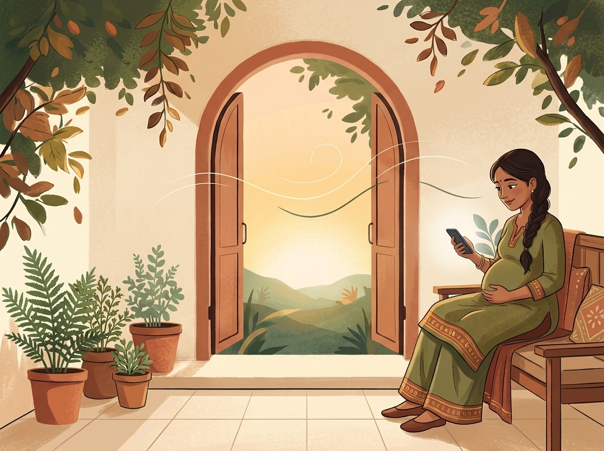
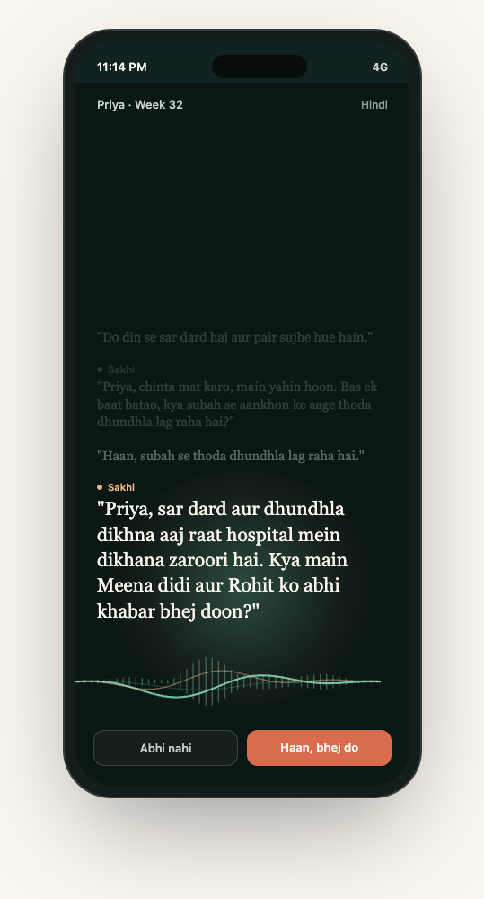
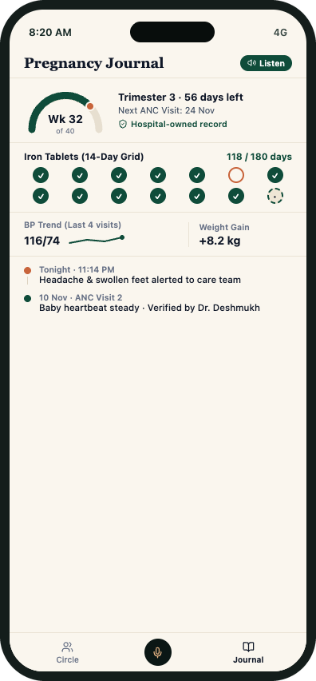
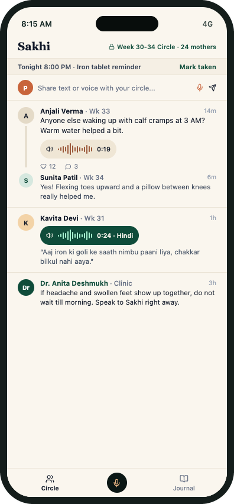

A calm voice companion for the weeks between monthly check-ups. Safe Ministry of Health guidance, care team alerts, and a complete health journal for her doctor.

Between monthly check-ups, mothers face scary symptoms alone at home.
The hospital registers her in 60 seconds. At home, she simply talks in her own language.

Every voice check-in, symptom, and iron tablet day becomes a clear visual record she can listen to before her visit.

A private community platform where mothers hear reassuring voices without scary internet myths.

Sakhi only takes four clear actions. If anything sounds unclear after one short question, it treats the case seriously and connects her to care.
Fast voice replies today, using open tools so we are never stuck with one company.
Expected Pilot Targets for our Phase 1 District Hospital rollout